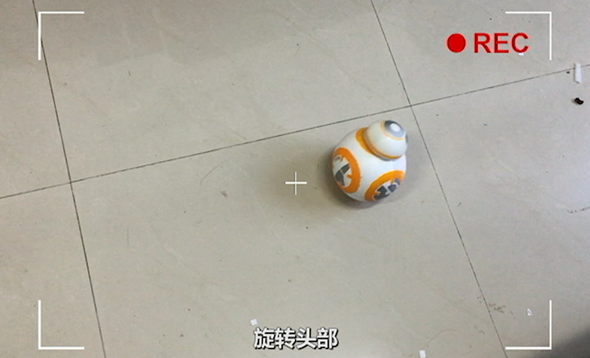
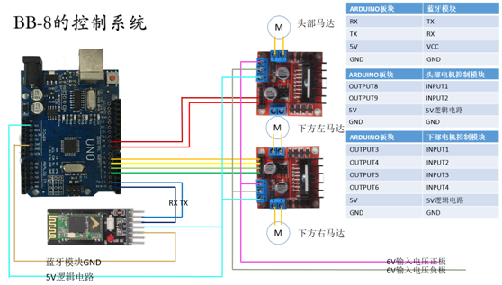
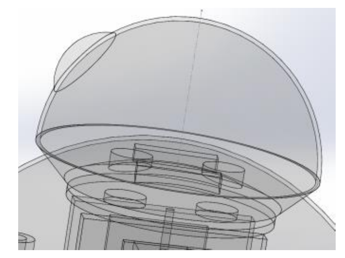
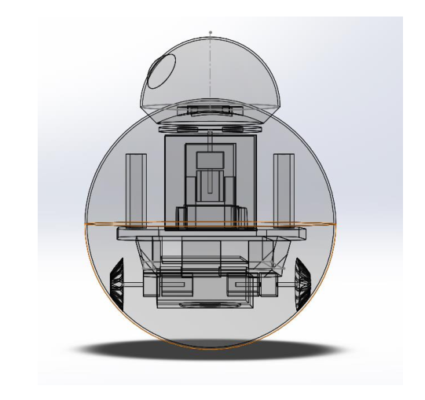

DIY a BB-8 Robot
指导老师：刘利刚

项目简介
原理说明：
头部通过磁铁吸引力与身体中的支持部分连接。支架的方向决定了头部的位置。 用于吸引连接的磁铁有两个，以便产生转动力矩，控制头部关于轴向转动。 头部悬浮的难点在于磁铁的选取，头部电机的控制，磁铁之间距离的控制，头部平衡的保持以及减少头部和身体之间的摩擦
结构设计
Figure 1: 控制系统
Figure 2: 头部结构
Figure 3: 整体结构
项目视频
感想与不足
经过20天的努力，我们的动手能力获得了很大的提升，制作过程中遇到的许多问题都在小组成员齐心协力下解决了，我们从中学到 了ARDUINO板的基本编程，连线的理论，还用3D打印机做出了我们自己的模型，最后看着BB8最终能在我们的指令下在地上行走， 成就感满满。
功能太少，缺乏和人的互动，未来可以加上的功能很多，比如手势识别：这样还可以和用户进行一些小游戏，语音识别：可以识别用 户发出的语音指令，定时提醒：对于需要定时吃药的老人，可以起到提醒作用，甚至幼童看护等功能，这样增加该机器人的实用性， 试问谁不想在家里放一个萌萌的BB8呢？
Copyright @ Wang Xiaofei | Origin Page